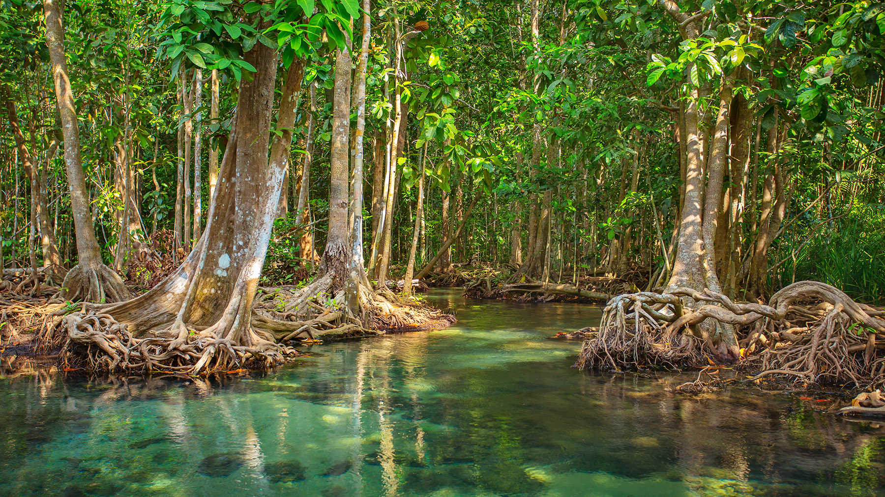
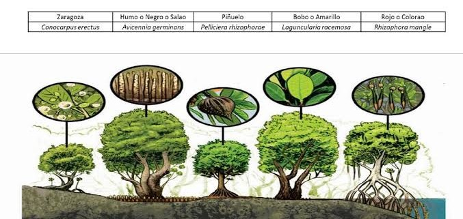
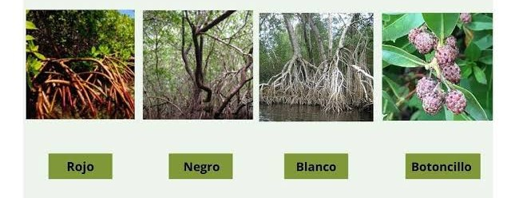
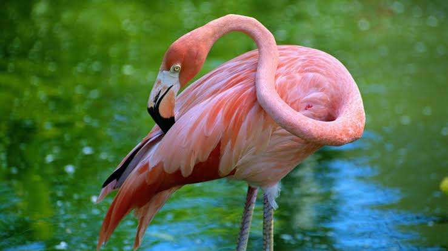
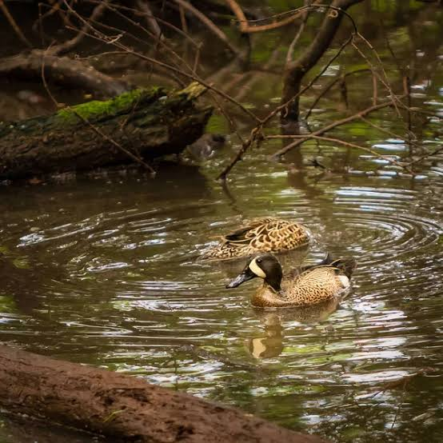
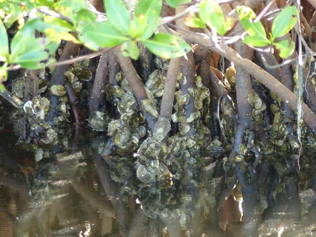

Manglar
Los manglares son ecosistemas acuáticos de árboles sumergidos que se ubican cerca del mar. Los tipos que existen son: ribereño, borde, cuenca, sobrelavado y matorral. La flora y fauna están adaptados a las altas salinidades y suelos fangosos. Las zonas cercanas a las costas son vulnerables a recibir fuertes tormentas provenientes del mar, pero el planeta esta tan bien organizado que existe un sistema de barrera vivo que ayuda a disminuir los efectos de tales fenómenos: los manglares. En ellos hay árboles de largas raíces adaptados a las condiciones más difíciles para una planta, pero a pesar de esto se han convertido en uno de los ecosistemas más productivos del planeta.

Según la zona, tipo de sustrato y factores ambientales, los manglares pueden tomar diferentes formas, frente a lo que existe la siguiente categorización para los tipos fisionómicos:

Este bosque que crece entre el agua y la tierra posee cuatro diferentes especies de mangle: mangle rojo, mangle blanco, mangle negro y mangle botoncillo.

Los manglares son un refugio seguro en el que cientos de especies pueden desovar, como moluscos, crustáceos y peces. Además, entre los depredadores acuáticos importantes están los cocodrilos y lagartos. No solamente hay biodiversidad bajo el agua, sino que la copa de los árboles tiene mucho valor para la vida. Los manglares son sitio de nidificación de muchas aves marinas y migratorias. Están, por ejemplo, los flamencos, garzas y patos. Aquellos que son migratorios encuentran en los mangles zonas de descanso en sus rutas de vuelo que pueden ir de punta a punta continental. En las ramas también pueden encontrarse frecuentemente monos. Por último, existe la fauna de valor comercial tenemos a los camarones y los ostiones, por ejemplo.
| FLAMENCO | PATOS DE MANGLE | OSTIONES DE MANGLE |
|  |  |  |